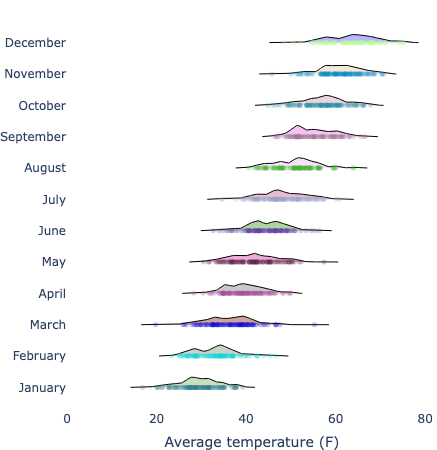

Introducing Ridgeline Plots: A Visual Feast for Data
What are Ridgeline Plots?
Ridgeline plots, also known as joyplots, are a visually appealing way to display the distribution of a numerical variable across multiple categories. Imagine a series of overlapping density plots, stacked vertically, creating a “ridgeline” effect. They’re excellent for comparing distributions and spotting trends across groups.

Why Use Ridgeline Plots?
- Clarity: They provide a clear and concise way to visualize distributions, especially when comparing many categories.
- Trend Spotting: They make it easy to identify patterns and trends across groups that might be obscured in other plot types.
- Visual Appeal: Ridgeline plots are aesthetically pleasing, making them great for presentations and reports.
- Space Efficiency: They can pack a lot of information into a relatively small space.
How Do They Work?
At their core, ridgeline plots are built from kernel density estimations (KDEs). KDEs are used to estimate the probability density function of a continuous variable.
- Calculate KDEs: For each category, a KDE is calculated.
- Shift and Stack: The KDEs are shifted vertically and stacked, creating the ridgeline effect.
- Optional Overlap: The plots can overlap to create a smoother, continuous look.
When to Use Ridgeline Plots
- Comparing Distributions: When you want to compare the distribution of a variable across multiple groups (e.g., comparing temperatures across months, income across regions).
- Time Series Analysis: When you want to visualize how a distribution changes over time.
- Exploring Categorical Data: When you want to see how a numerical variable is distributed within different categories.
How to Create Ridgeline Plots in Python
You can create ridgeline plots in Python using libraries like joypy or by manually calculating and plotting KDEs with seaborn and plotly or matplotlib.
Example using plotly & seaborn:
import numpy as np
import pandas as pd
import seaborn as sns
import plotly.graph_objects as go
import matplotlib.pyplot as plt
np.random.seed(42)
months = ["January", "February", "March", "April", "May", "June", "July", "August", "September", "October", "November", "December"]
data = []
for i, month in enumerate(months):
temperatures = np.random.normal(loc=30 + i * 3, scale=5, size=100)
for temp in temperatures:
data.append([month, temp])
df = pd.DataFrame(data, columns=["Month", "Temperature"])
fig = go.Figure()
for i, month in enumerate(months):
subset = df[df["Month"] == month]["Temperature"]
kde = sns.kdeplot(subset, bw_adjust=0.5)
x, y = kde.get_lines()[0].get_data()
plt.close()
y_shifted = y + i * 0.3
fig.add_trace(go.Scatter(
x=x, y=y_shifted, mode='lines', fill='tozerox',
name=month, line=dict(width=1, color='black'),
opacity=0.7, fillcolor=f'rgba({np.random.randint(0, 256)}, {np.random.randint(0, 256)}, {np.random.randint(0, 256)}, 0.4)'
))
fig.add_trace(go.Scatter(
x=subset, y=[i * 0.3] * len(subset), mode='markers',
marker=dict(size=5, opacity=0.5, color=f'rgba({np.random.randint(0, 256)}, {np.random.randint(0, 256)}, {np.random.randint(0, 256)}, 0.5)'),
name=month, showlegend=False
))
fig.update_layout(
title="",
xaxis_title="Average temperature (F)",
yaxis=dict(
tickmode='array',
tickvals=[i * 0.3 for i in range(len(months))],
ticktext=months,
zeroline=False,
showgrid=False,
showline=False,
ticks=''
),
showlegend=False,
plot_bgcolor='white',
margin=dict(l=0, r=0, t=20, b=20)
)
fig.show()